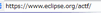
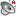
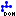
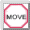
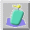
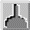

「進む」

miChecker の上部には6つのメニューがあります。 これらはショートカットキーを使っても利用できます。
| 「戻る」 「進む」 |
|
ひとつ前の画面に戻る、または次の画面に進みます。 |
| 「更新」 | 表示されているウェブページを、再度読み込んで更新します。 | |
| 「停止」 | ウェブページの読み込みを中止します。 | |
| タイトルバー | 現在表示されているウェブページのタイトルが表示されます。 | |
| アドレス入力バー |  | チェックしたいウェブページの URL を入力する領域です。アドレス入力バーをダブルクリックするか、Alt+D キーを押すと、アドレス入力バー内の URL のテキストが選択された状態になります。 |
| 「現在の URL を開く」 | アドレス入力バーに入力された URL に移動します。 |
音声ユーザビリティタブ選択時には、miChecker の右上部分には 「視覚化ビュー」 が表示されます。 視覚化ビューには、以下に説明するような、ボタンや視覚化結果を表す対話的要素が含まれます。
| 「アクセシビリティ検証・音声ユーザビリティ視覚化」 |  | 音声ユーザビリティの視覚化を行い、音声ブラウザユーザーにとってのアクセシビリティとユーザビリティのチェックを開始します。 |
| 「アクセシビリティ検証・音声ユーザビリティ視覚化（音声ブラウザモード）」 |  |
音声ブラウザの出力をシミュレートした結果を表示すると共に、音声ブラウザユーザーにとってのアクセシビリティとユーザビリティのチェックを開始します。 |
| 「チェック対象（HTMLファイル）」(トグル) | 音声ユーザビリティ視覚化およびアクセシビリティ検証の対象としてHTMLファイルを利用します。 | |
| 「チェック対象（ブラウザ内のDOM）」(トグル) |  | 音声ユーザビリティ視覚化およびアクセシビリティ検証の対象として、ブラウザ内で解釈された文書構造(DOM)を利用します。 認証などの関係でHTMLファイルを対象に出来ない場合や、JavaScriptを用いて動的に変化するページを評価する際などに活用してください。 |
| 「設定」 | 設定パネル（音声ユーザビリティ視覚化 設定）を開きます。 | |
| 「保存」 | チェック結果をレポートファイルに保存します。 レポートファイルはCSV形式ですので、各種アプリケーションを用いた問題点管理に利用できます。また、「HTML形式のレポートも保存」オプションを選択することで、HTML 形式のレポートも保存することが出来ます。HTML形式のレポートは、コンテンツの製作者などと情報を共有する際にも利用できます。 | |
| 「ID/AccessKey/Class/CSS情報を開く」 | ID/AccessKey/Class/CSS Inspector (確認) パネルを開きます。 このパネルを使って、対象ウェブページの要素の属性情報 (ID, AccessKey, CLASS) とスタイルシート(CSS)の情報を調べることができます。 | |
| 「HTMLバリデーション」 | W3Cの提供するMarkup Validation Serviceを利用してHTMLの文法を確認することができます。 （サービスの内容・利用条件などはW3Cの提供する説明ページを確認の上、ご利用下さい。） |
視覚化結果が表示された画面内では、バルーンメッセージがマウスカーソルとともに動きます。 バルーンメッセージ内には、マウスカーソルが指している要素への正確な到達時間（秒単位）が表示されます。 マウスカーソルが指している要素がアクセシビリティ関連タグである場合には、そのタグ名も表示されます。
バルーンメッセージ内に表示される顔アイコンは到達時間によって表情が変わります。
| 該当するエレメントへの到達時間は30秒以内です。 | |
| 該当するエレメントへの到達時間は31秒以上90秒（デフォルトの許容最大到達時間）以内です。 | |
 |
該当するエレメントへの到達時間が90秒を超えています。 |
バルーンメッセージは 「移動」 と 「固定」 の二つのモードのどちらかを選ぶことができます。 初期設定では、バルーンメッセージはマウスカーソルと一緒に動きます（移動モード）。 移動モード中に、画面内のどこかで左クリックを行うと、バルーンメッセージはその場で止まります（固定モード）。 固定モードを利用すると、特定の要素がバルーンメッセージに隠されるのを防ぎつつ、各要素への到達時間を調べることができます。 画面内のどこかで再度左クリックを行うと移動モードに戻ります。
| リンク元アイコン |  |
リンク元アイコンを選択すると、対応するリンク先アイコンまでの間に矢印が描画されます。 |
| リンク先アイコン |  |
リンク先アイコンを選択すると、対応するすべてのリンク元アイコンまでの間に矢印が描画されます。 |
矢印は赤い円のつながりとして表現されます。 矢印が描画された状態で再度これらのアイコンを選択すると、矢印は消えます。
バルーンメッセージやページ内リンクを表す矢印は、コントロールパネルによって操作することができます。 コントロールパネルは常に視覚化ビューの右下に表示されます。
| バルーンメッセージ固定 | バルーンメッセージをコントロールパネルの近くで固定します。 | |
| バルーンメッセージ固定解除 |  | 固定を解除し、バルーンメッセージが再度マウスカーソルと一緒に動くようにします。 |
| ページ内リンク全消去ボタン |  | 表示中のページ内リンクを表す矢印をすべて消去します。 |
| ページ内リンク再描画ボタン |  | 表示中のページ内リンクを表す矢印を再描画（更新）します。これは、ビューの大きさを変更した際に矢印がずれてしまう現象に対処する際に使用できます。 |
| 全ページ内リンク描画ボタン | 処理中のウェブページ内にあるすべてのページ内リンクを表す矢印を描画します。 |
ロービジョンタブ選択時には、miChecker の右上部分にはシミュレーションビューが表示されます。 シミュレーションビューには、以下に説明するようなボタンとチェックボックスがあります。
| シミュレーション | ロービジョンシミュレーションを行い、ロービジョンユーザーにとってのアクセシビリティとユーザビリティのチェックを開始します。 | |
| 設定 | 設定パネル（ロービジョン シミュレーション 設定）を開きます。 | |
| 保存 | チェック結果をレポートファイルに保存します。 レポートファイルは HTML 形式ですので、通常のウェブブラウザで表示することができます。 | |
| 「全画面」 チェックボックス |  |
チェックボックスオン: ブラウザビューに表示されていない部分を含むウェブページ全体が処理対象となります。複数フレームから成るウェブページの場合は、すべてのフレームが処理対象となります。 チェックボックスオフ: ブラウザビューに表示されている範囲のみが処理対象となります。 |
音声ユーザビリティ視覚化時とロービジョンシミュレーション時で表示されるアイコンが多少異なります。
 | このアイコンは他のアイコンと併用されます。 このアイコンが表示されている行を選択すると、視覚化ビュー上でその問題点に対応する要素がハイライトされます。 |
| 指摘箇所に問題が存在します。 | |
| 指摘箇所に問題が存在する可能性が高い項目です。 | |
| 評価すべき箇所をツールが指摘しますが、問題を含むかどうかは人が判断する必要がある項目です。 | |
 |
ツールでは評価すべき箇所を指摘できない項目です。テスト方法にしたがって問題の有無を判断する必要があります。 |
| | このアイコンは他のアイコンと併用されます。 このアイコンが表示されている行を選択すると、その問題点に対応する要素がシミュレーションビュー上で矩形枠に囲まれて表示されます。 |
| 色に関する問題点を表します。 | |
 | 視力（フォントの大きさ）に関係する問題点を表します。 |
この部分では、対象ページのそれぞれの障害視覚化における総合評価と、障害視覚化に固有の情報が表示されます。
レーダーチャート: 次の4項目から成るレーダーチャートです。
Problem Map: ページ内における問題点の発生場所を表す図です。
これにより、大きなウェブページであってもどこに問題があるか容易に発見できますし、ウェブページ内のどの部分に問題点が集中しているかといったこともひと目で把握できます。
総合評価は、ページ内で検出された問題の深刻度の合計に基づいて判定されます。